Mini fashion magazine inspired by Tyler Mitchell’s photo book, “I Can Make You Feel Good”.
Technologies used: Nikon Digital Camera, Adobe Ps
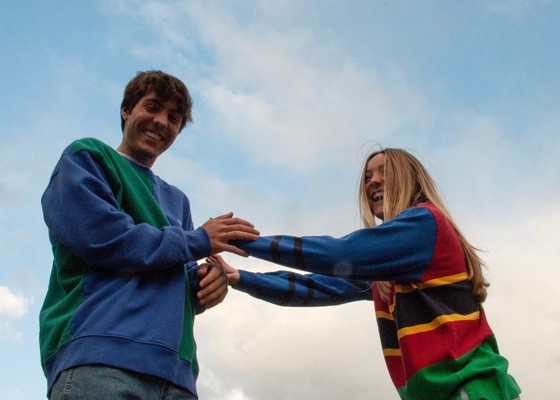 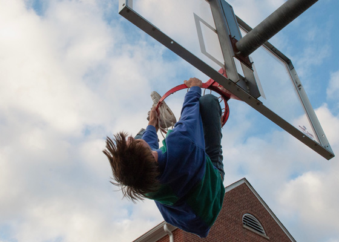 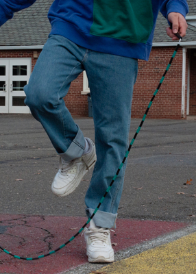 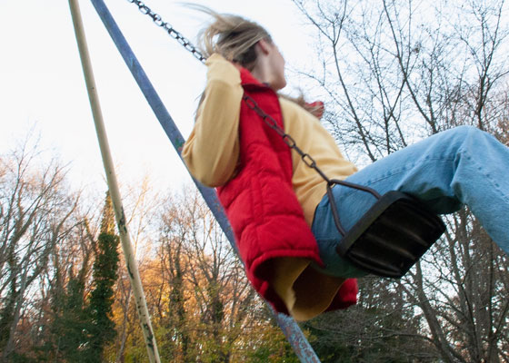 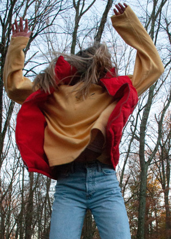 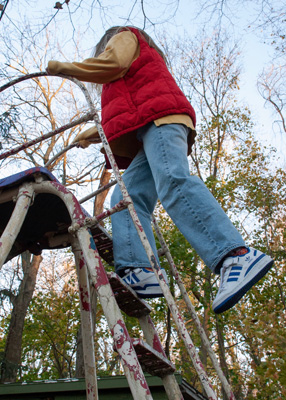
A collection of photos that I curated during my time studying abroad in Europe. Photos from Paris, Prague, Milan, London, Barcelona.
Technologies used: Mini Nikon coolpix digital camera
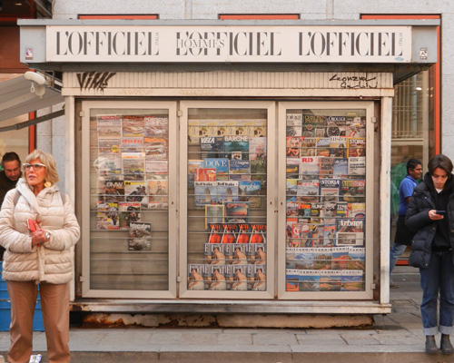 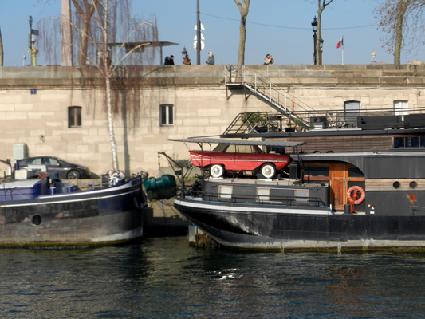 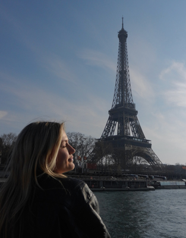 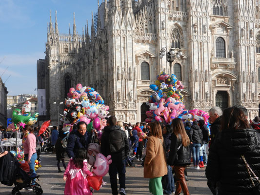 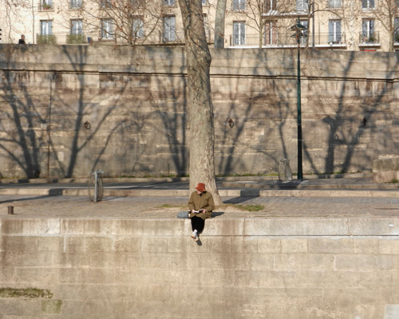 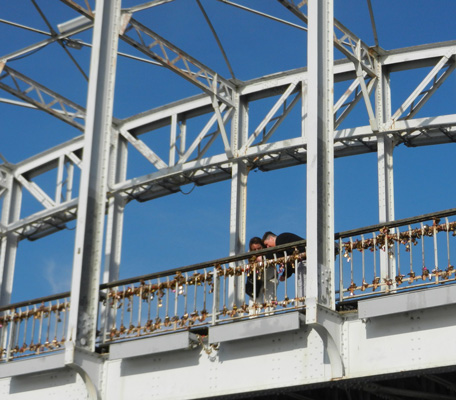 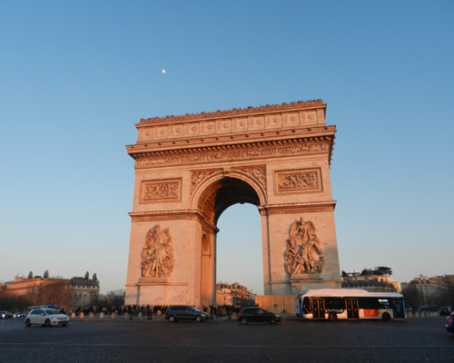 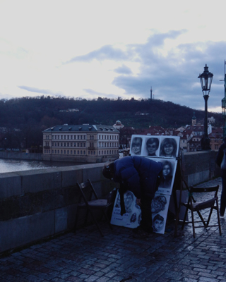 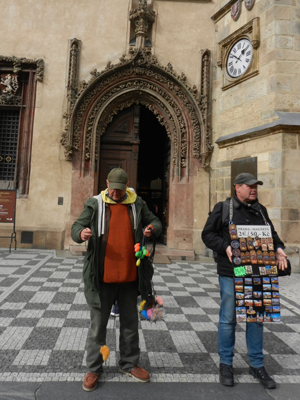 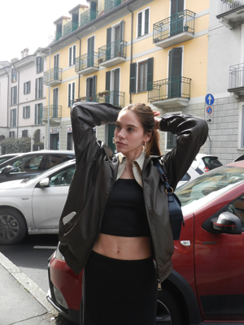
Freelance street photography and portraits from my trip to Portugal. Photos from Lisbon, Algarve, & Porto.
Technologies used: Nikon Digital Camera, Adobe Ps
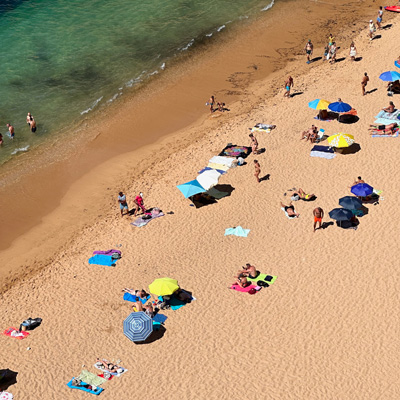 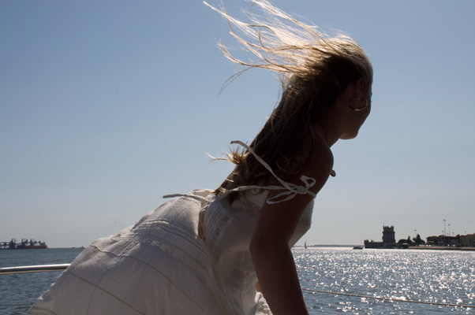 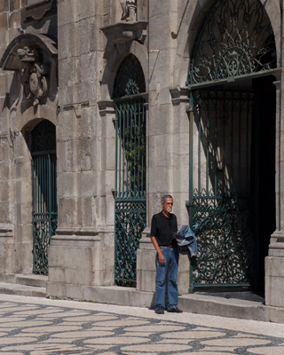 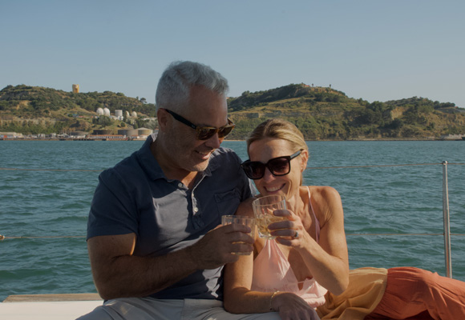 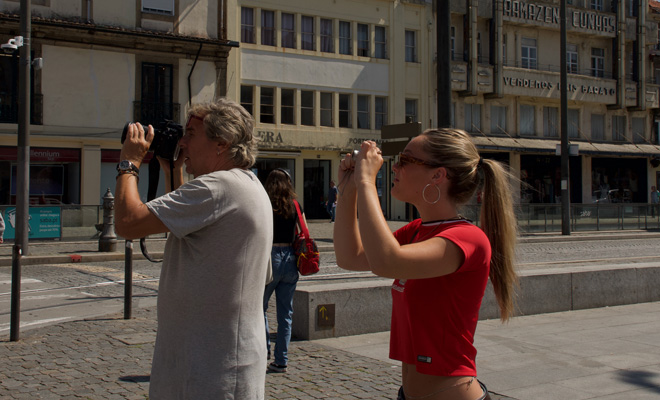
White denim, fabric paint & markers, crepe chiffon. Inspired by fashion designer Juliet Johnstone.
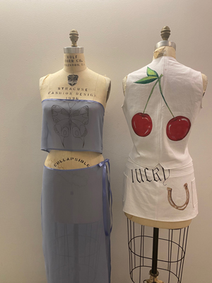
My creative process for my senior fashion collection. My collection is my take on making streetwear a bit more feminine, and drawing inspiration from vintage sportswear.
Work including my sketches, illustrations, final garments, and my fashion show.
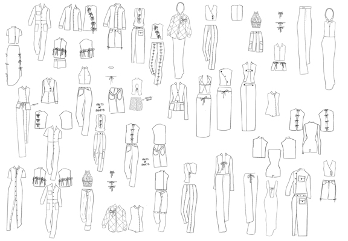 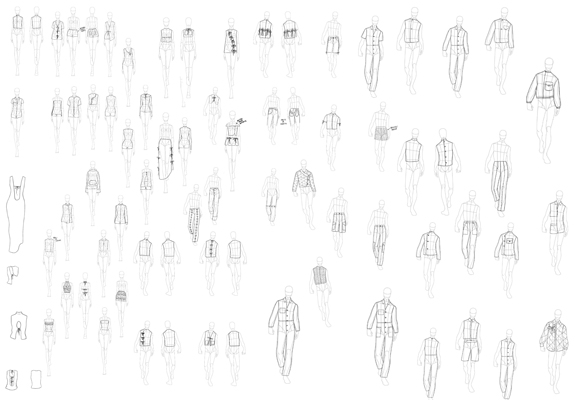 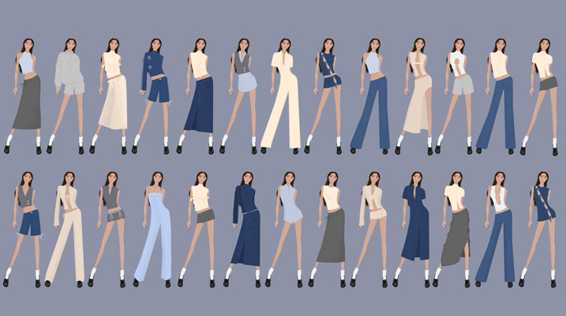 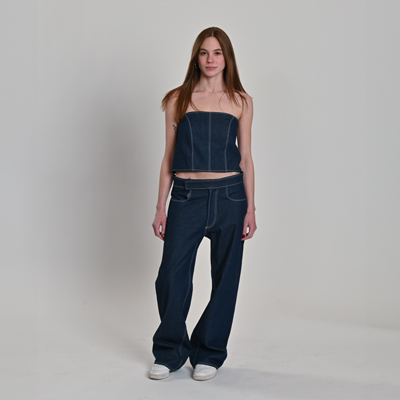 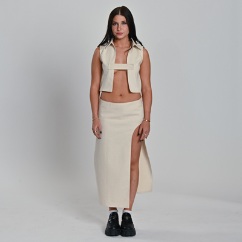 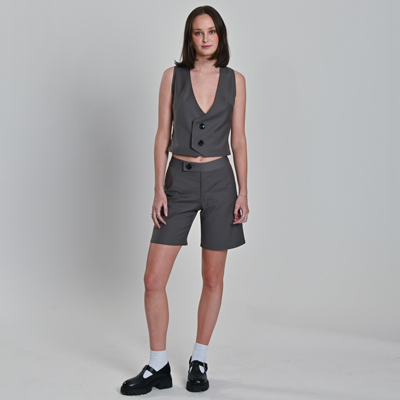 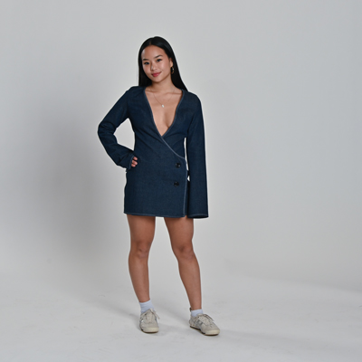 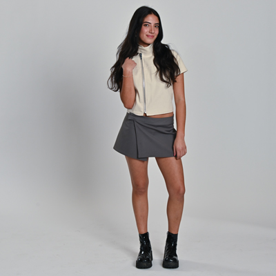 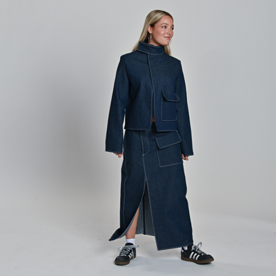
Digital art, painted art. Acrylic paint, paint pens, Procreate.
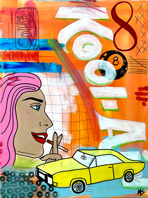 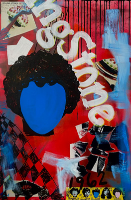 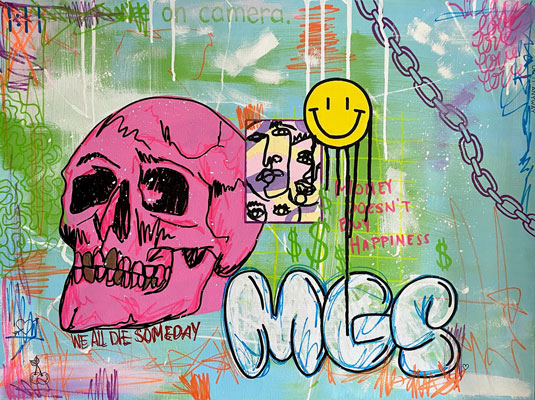
Digital art, painted art. Acrylic paint, paint pens, watercolor, Procreate.
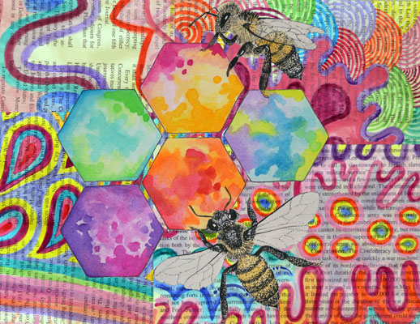 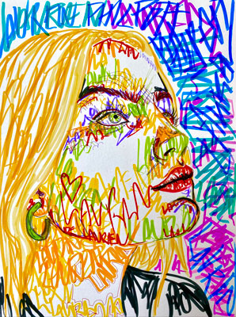 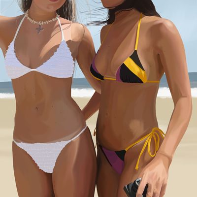
Creative director: Joseph Toronka
Stylists: Madeline Sedlak, Lauren Philpott, Stephanie Mayer, Liv Pilot, Care Santos
Photographer: Hermeilio Aquino
Model: Zoe van der Zee
Location: Green Park Tube Station
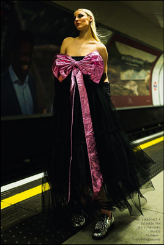 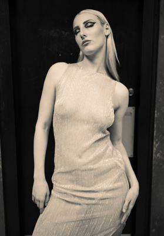 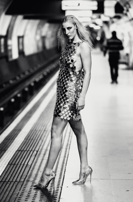
Creative director: Joseph Toronka
Stylists: Madeline Sedlak, Ava Lahijani, Stephanie Mayer, Lauren Philpott
Photographer: Rakkesh Patel
Model: Avital Tzur
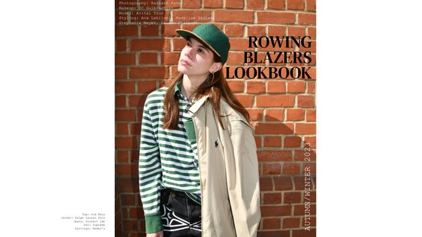 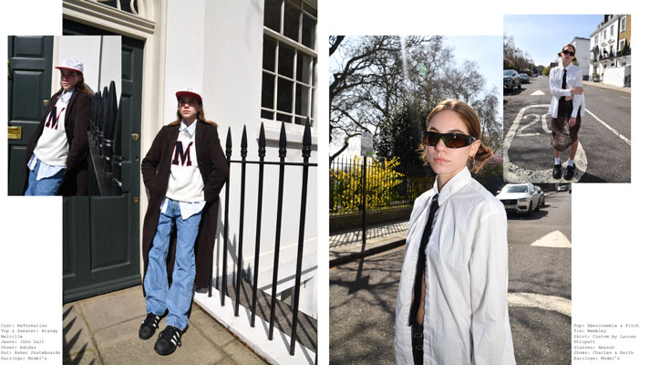 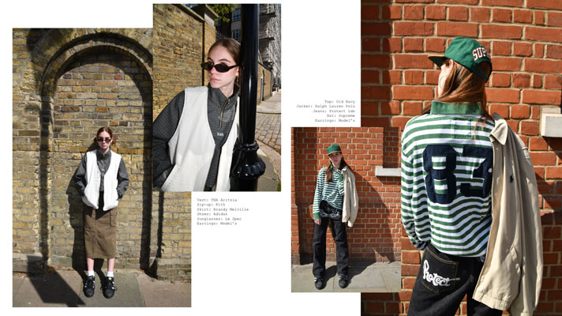 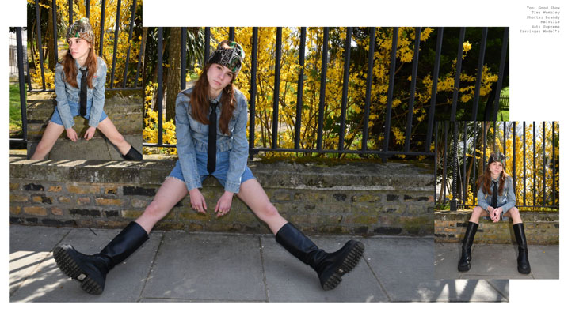 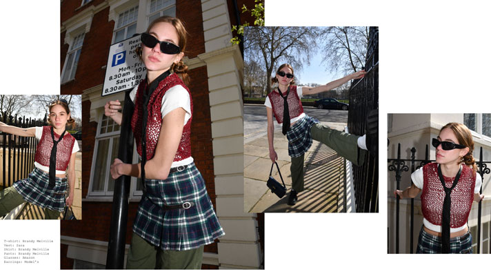
Top- @operasport___ edition 14 tavon shirt $215
Pants- @damsonmadder dion jean $100
Shoes- @birkenstock Boston cocoa wool $105
Glasses- @loewe brown square acetate glasses $260
Hat- @neweracap ny yankees name 59fifty fitted cap $55
Bag- @ugg x @telfar small shopper bag $169
Earrings- @mejuri chunky huggie hoops $98
Nails- @essie amuse me
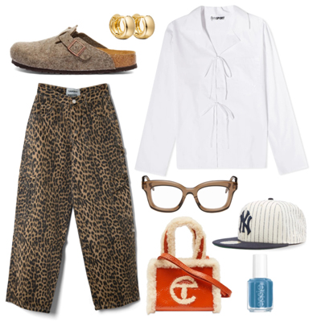
Sweater- @supreme camacho cowichan sweater $498
Jeans- @houseofsunny 01 courtyard carpenter denim $91
Bag- @isabelmarant oksan moon shoulder bag in burgundy $1025
Shoes- @Adidas gazelle indoor scarlet & white $119
Glasses- @gucci tortoiseshell aviator glasses $375
Earrings- @sophiebilliebrahe white rosette de perles earrings $1775
Ring- @lanvin god melodie ribbon ring $390
Nails- @essie mezmerised
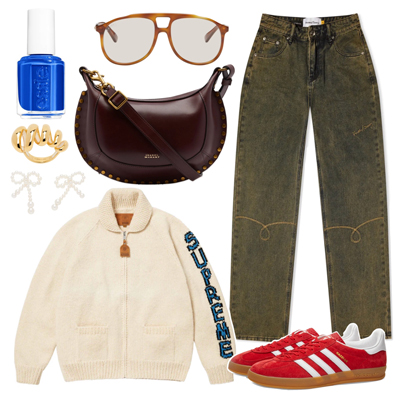
Top- @gimaguas aria top navy/beige $95
Jeans- @carharttwip Orlean stripe pant stone washed $148
Shoes- @ganni chunky buckle ballerina black $395
Bag- @staud green crescent mini bag $250
Belt- @jillsander black cannolo belt $930
Earrings- @jiwinaia silver & white earthling pearl earrings $295
Bracelet- @numbering silver & white beads bracelet $115
Scent- @jomalone English pear & freesia $165
Nails- @essie cyber society
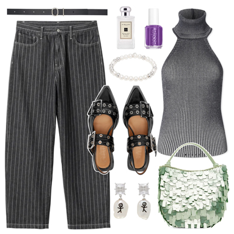
Top- @ganni gold denim top $225
Jersey- @latecheckout.issalifestyle LC white baseball shirt navy
Skirt- @annasui blue rhinestone maxi skirt $420
Sneakers- @salomon blue xt-6 gtx sneakers $220
Bag- @bottegavenetaworld red mini jodie bag $2650
Glasses- @givenchy gold square glasses $250
Ring- @spinellikilcollin silver & gold sirius sg ring $300
Nails- @essie east Hampton cottage
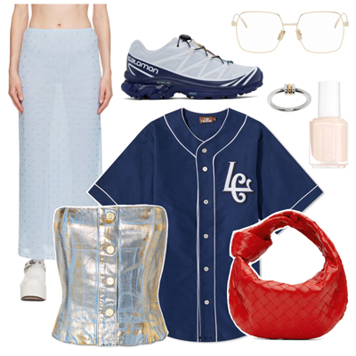
Sweatshirt- @jaquemus white le chouchou "le hoodie noeud" hoodie $200
Pants- @carharttwip double knee pant wax "dearborn" canvas $148
Sneakers- @newbalance white & blue 860V2 sneakers $150
Bag- @ottolinger orange signature baguette bag $432
Sunnies- @tomford black Bronson sunglasses $555
Bracelet- @bless.jewellery silver & gold cable chain bracelet $77
Nails- @essie willow in the wind
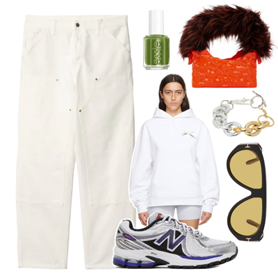